来源：https://b16xnqwk20.feishu.cn/docx/Lw7vdzbQYouetTxvAoycf76Wnlf
各位新老朋友大家好，见贴欢喜，我是宋老师
首先很感谢大家支持，最近在忙着孵化IP，有一段时间没有分享了。我是宋老师（账号叫宋老师帮你做课），全网20W+粉丝👇，也是一家MCN机构的主理人，孵化了家庭教育、银发赛道的几个ip，单月变现7位数，感兴趣的老师欢迎来聊
很多抖音、小红书做知识付费的小伙伴可能知道我，简短的自我介绍一下，便于大家快速知道我的价值
我的四个标签：
1.目前自媒体头部的做课&卖课博主→流量能力
2.原来的新东方总监，最高记录同步管理80w学生社群→教学能力
3.12000多位知识博主的老师→成绩
4.很多百万博主背后做课卖课的男人
5.知识类MCN创始人
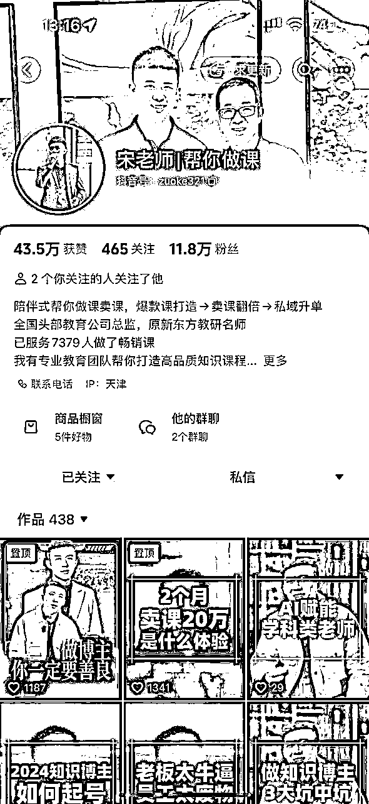
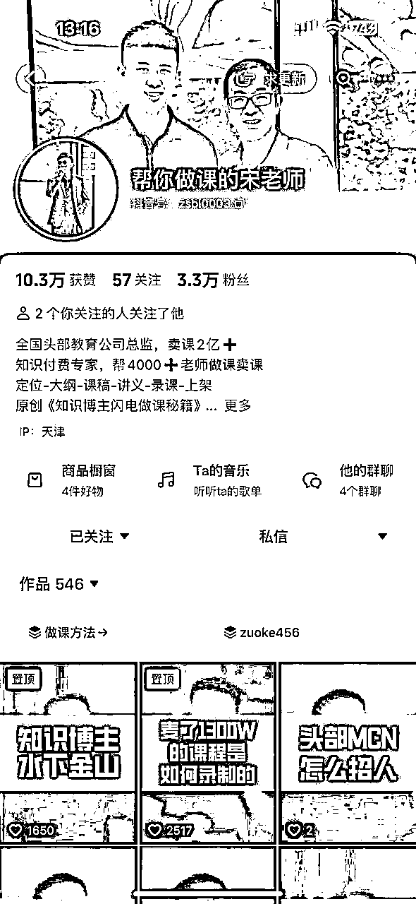
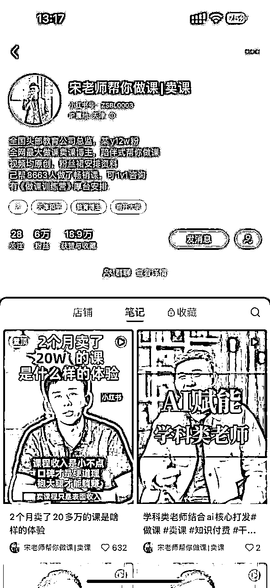
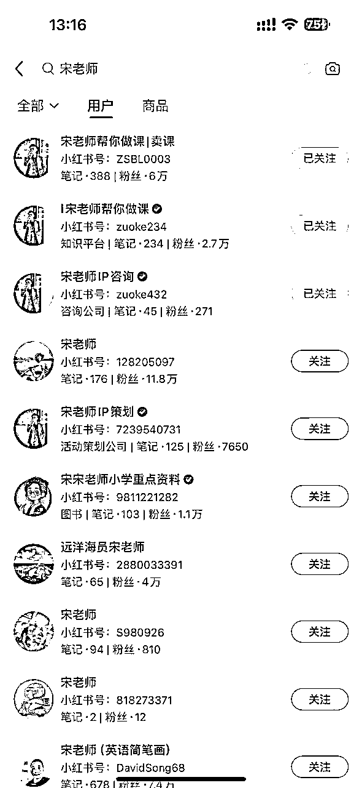
今天给大家分享，知识博主如何快速起盘，前期我到底作对了什么？正反馈的重要性！
高客单在 2024 年是一个核心杠杆，能够提效增速的东西
博主一定要有一个1万块钱以上的产品，为什么这个产品抗风险？我给大家讲个故事，大家就明白了，就是我们其实去年公司有一段时间是很动荡的，是因为透透糖当时爆雷，所以卖课的时候当时不景气了。
第二个是当时抖音不让挂车的那刹，其实瞬间知识付费市场就不香了，所以那个时候什么产品救我们呢？就是高客单 。
首先我们今天来讲的核心主题叫做怎么去做高客单。我希望今天的分享，能让所有朋友都能捋出一个高客单的思路来，我会给你们一幅高客单地图，你们去按照这个地图来做。
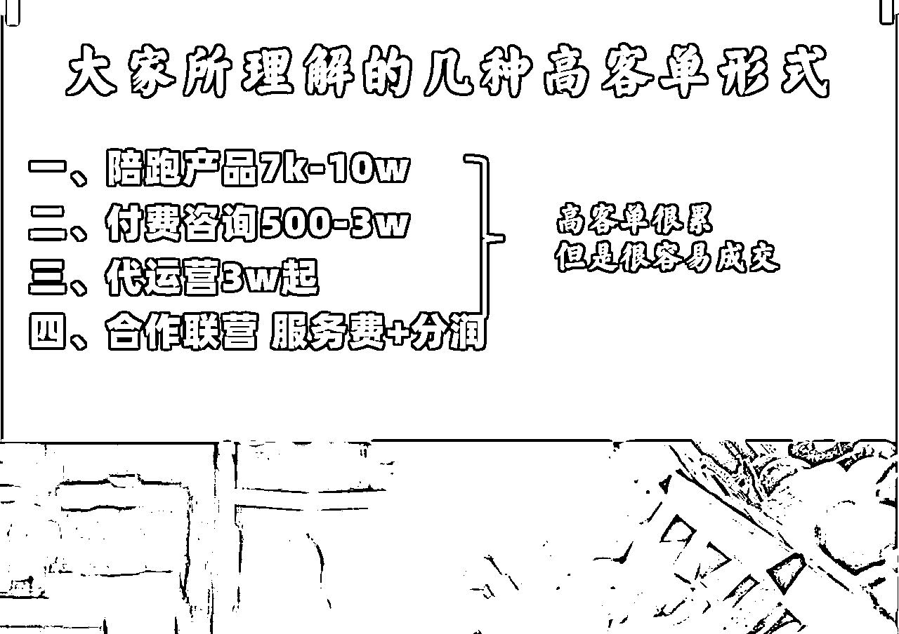
大概我们是做 7, 000 到 10 万的，
比方说陪跑做店铺，陪跑做直播，包括我们有陪跑做课的，我们有陪跑做私域的，这是我们的业务，包括你还有陪跑别人提高这个找对象的概率，各种各样的陪跑都可以。核心就是你能交付给他一个实际的内容，让他有收获感
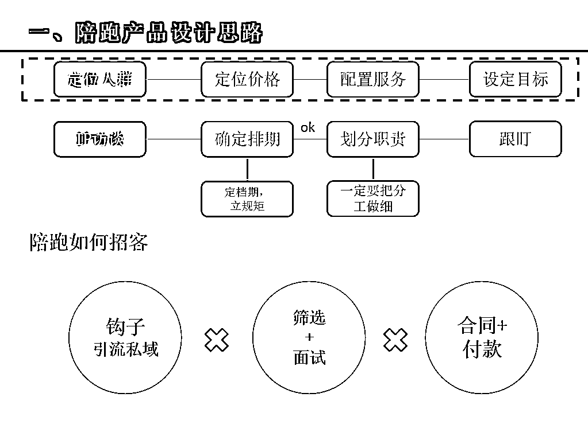
200 块钱一小时，让人觉得愧对于老师的身份， 我 6000 粉丝我都收 500 块钱，一小时 500 块钱到3万你都可以决定，付费的价格决定了你的人设
代运营和陪跑的本质区别是什么？陪跑是可能是我陪着你，我指导你干。代运营是我帮你干，这两个东西不一样，
我帮你干的价格可能要更高一点，但是代运营最后的结果一般都不会特别好，因为它不是你自己的事，很难全身心投入进去
比方现在我们签约博主，我们现在大概签了 7 个博主，然后每个博主最高的一个月能给我们分个分的也没有那么多，分个 50 万左右。然后少的话一个月可能分个三四万左右。所以合作联营是服务费+分润
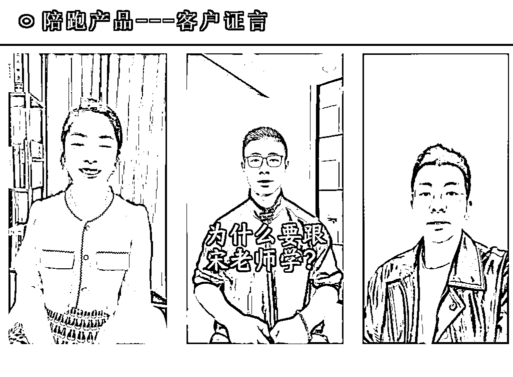
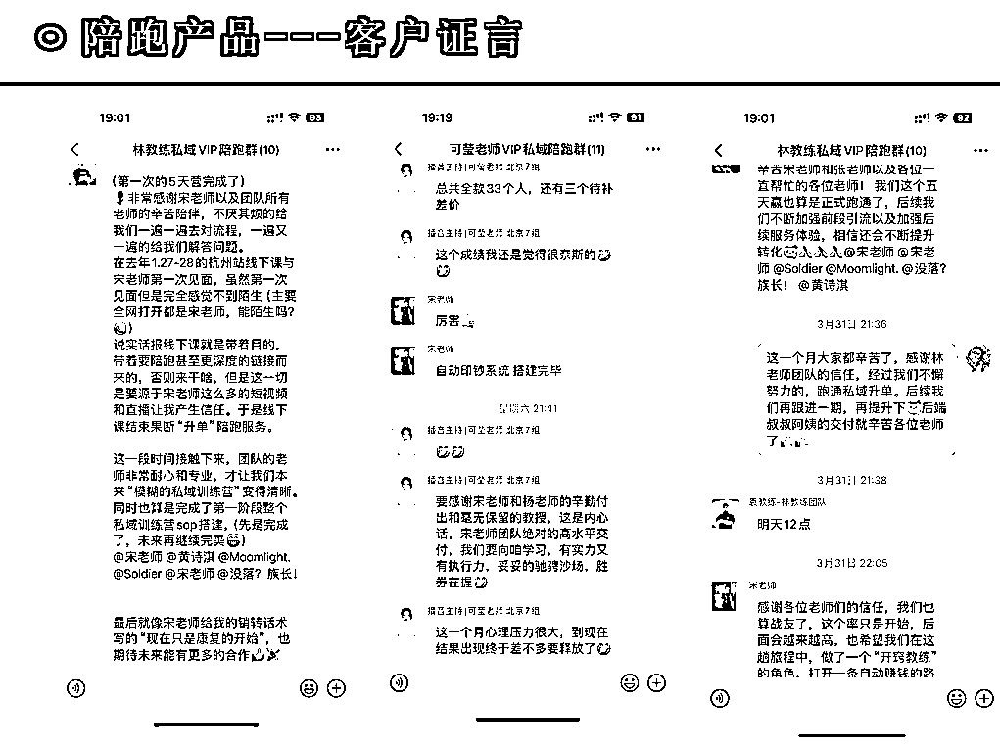
为什么一定要有服务费？
你是一个成熟的博主了，你有很多的经验方法论，要考虑一件事情，就是我在前期花很多的精力和时间。我举个例子，我们现在很多人说宋老师，我想跟你签约，我想让你们帮我孵化，我想跟你联营，那我会考虑一个事情，因为我现在我核心操盘手的工资都很高，可能都大家都想象不到的工资。
那我扔三个人进去的成本是多少？我自己的时间扔进去多少？我的场地进去多少？我再扔设备进去多少， 把这些设备综合核算下来之后，其实你可能核算出来一个月综合这些人的成本花个六七万
时间是最贵的事情
大家一定要记住，就是我们在这种高客单时候一定要考虑时间，成本很重要，所以我们可能跟他联营的时候，我们就会收他3万块钱，各摊一半
大家对这件事情去共同创业的态度，所以他如果他理解是我收他钱去干这件事情，或者说我又收了一个变相的培训课费，我们坚决不会签约，就是他永远的视角是我在收他钱，而不是我们一起合伙投了3万块钱创业。
我投的可能是人，他投的可能是钱，因为这些人不干他那个活，可以干其他活可能有更高产出，所以他们一个月可能我们都要给开出 10 万块钱的工资。
第一个抗风险；
第二个小粉丝量可变现；
第三个筛选高阶用户；
第四个容易出案例。
我们当时在去年 4 月份的时候遭遇过一个公司很大的危机，就是当时抖音不让卖课，所以我们下滑流量很猛，我们原来一天能加 100 个微信，当时可能一天只加 30 个微信，那怎么办？你如果当时只卖 399 的话，你公司就倒闭了，因为卖不了多少了，没多少单，大家拿不到钱不就走了嘛？
所以当时调战略，全部都把30个微信转向高客单，就一个个聊，所以当时对于高客单的想法就是我能够多成几个高客单的话，我的收入就能稳上去
我会每周安排小伙伴做引流的钩子，确保稳定的流量。结尾我分享了，钩子的打法

包括我现在看到很多人起家的时候，他都是卖陪跑产品，或者卖咨询产品、卖服务产品，就是比方说我帮你做个号， 或者我帮着你去干嘛？这可能都是各种各样的方法，就是所以你要去找那个你自己在小粉丝里面把人引过来之后，能跟他一对一或者一对几交付的一个产品，这样的话可以测出这个产品到底能不能行。
小粉丝可变现这个点特别好
第一个，你不需要有很大的粉丝量
第二个，你能在陪跑的过程中看到用户的问题，那些问题都是短视频文案
第三个，筛选高阶用户
其实陪跑产品非常容易出高阶客户，因为价格其实成为了一个核心门槛，他如果能付这个费，他肯定是有这个认知的，很少有人就是我们现在做高客单都一直秉持着一个核心逻辑，就是坚决不收负债人
所以核心的逻辑就是因为他到底做这件事情，是不是他能力范围内的，还是他还要赌一把？
因为是你真实在帮他，你带他干，你想想你 300 块钱搞个录播课，你哪有功夫你带他干，那个时间、精力、成本没有那么轻松
1.担心价格高不好招
2.不敢收钱
3.不知道啥交付算高客单交付
我给大家做个心理按摩，其实这个高客单是真的需要做心理按摩的，它跟你敢不敢收有关系？
就是客户其实他不需要便宜，他需要的是值得
因为你思考一个问题，你想一年搞 100 万，如果一个客户1万的话，我今年就收 100 个客户就可以了。如果我要搞 399 的话，或者我搞 200 块钱的课的话，我一年可要收 5, 000 个客户
服务半径也不一样，你服务难度也不一样，你招生难度也不一样。
高客单交付其实你要考虑一个问题
是你自己的心态问题，根本就不是人家用户有没有钱的问题，就是你自己觉得你自己没有信心，就是，所以你要做的是什么？
闭上嘴，先招一个，就你先用微信先聊一轮，然后电话直接约打电话建立信任。其实与声音，人的声音是有温度的、有起伏的，它会传递信任，传递能量过去
其实你如果不敢收钱，我教你一招，从价格低开始收，你先做个 6, 000的 产品，再做个 7, 000，再做个 8, 000，不停涨价，因为高客单是个黑盒 ，你涨价如果涨歪了，你还可以降回去， 所以你可以从低价往高慢慢涨，慢慢测试，如果说你卖2万块钱还有人买，你再涨3万，如果发现涨3万没有人买了，我再降回到2万
其实没有所谓的极好的交付，就是学员的感受，学员的收获，他的得到，这个东西是好交付，就是你要看他们的反馈
所以怎么看反馈？你先招一个全心全力的帮他干成，然后他干成了，他反馈好了那个好评，那个小作文打出来那一刹那，一切乌云都散了，天都亮了，
你没有评估标准，你只有让用户评估标准才是最终标准，
三个核心点
第一个你的时间很值钱，你不要贱卖，你卖多少钱决定你的人设是什么，
第二个你在过程中可以从低价到高价，慢慢涨 。
第三个没有所谓的好交付，别人好的交付都是别人捧起来的，就是你要看用户的反馈。
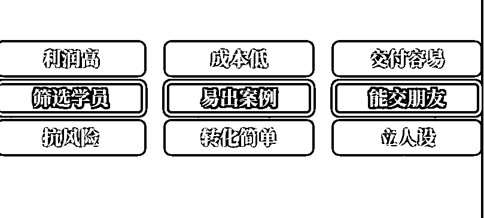
内容比较多，可以参考图片中的词，领悟
脑筋急转弯
你现在产品有
199【朋友圈】
1980【补漏】
29800【主推】
49800【炮灰】
怎么推课？
第一种组合方法，就是我主推199，但是 199 必须要足够多，然后我升 29800 或者升1980，直播间流量够大。
如果私域我就自己一个人 ，我优先推的品一定是29800。
为啥你这么去理解 49800 筛掉了大量的客户，但 29800 还好，一般这个中产、中高产家庭应该都能满足这个29800，但是 49800 我个人感觉是有点压力了。
所以49800 我把它定义为一个产品--炮灰产品，就把它定义为一个如果有人真的是很高净值的，它是那个灯塔，它是那个塔，塔尖上的。塔尖一定要有人吗？不一定。塔尖上一定要站人吗？不一定，它是那个炮灰产品，帮你拉拉高人设的一个品，但我应该主推的还是个 29800 或者14800，然后如果这个人不行的话，我们再接下来再1980，就是它是一个捡漏品，它是个补漏品。
然后所以这个 29800 我开始主推，所以这个主推的方法就是打电话语音 然后 199 我不推了，朋友圈影响， 他还嫌贵，我就不跟他聊了，再聊降我身份，我朋友圈慢慢影响他。他知道我还有 199 的品，他就过来买 199 就可以了。
综合的各个维度都下来了， 有炮灰品、有主推品、有补漏品、有朋友圈品，这几个品一下都能找到点位，一定要从高到低。
所以客户其实要的是价值，不是价格，所以你不要把价格过多的说，你不要过多在乎那个价格能力，你要把那价值包装出来，就他能帮什么东西？
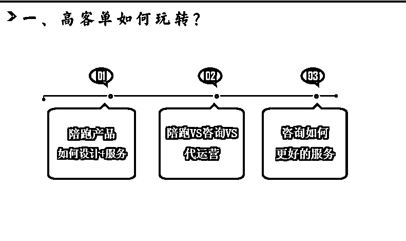
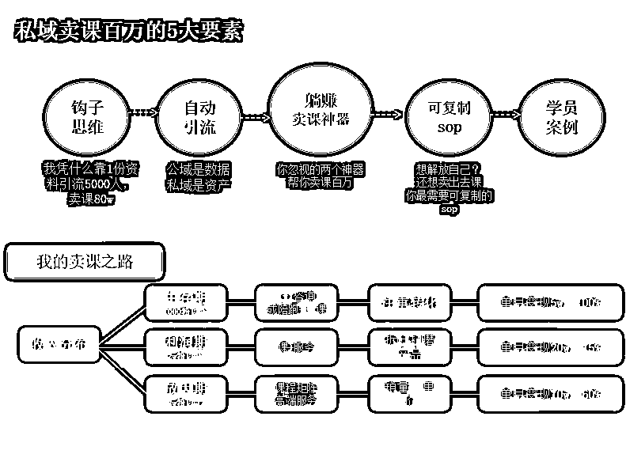
在 1, 000 粉以下没有卖过低客单，卖的都是 5, 000 块钱以上的产品，所以当时一个月能赚5万块钱，一个月能挣5万块钱，然后这块其实不需要什么人工，我的利润在百分百
一个月我收 10 个客户就5万块钱，对不对？不难，因为你一个月加，你思考一下，我当时一个月应该加了不到 50 个微信。
每个微信我都打电话，都约电话、约咨询，我跟他说你有一次稀缺的资讯，
我话术是这样的（仅供参考，哈哈）
我把底牌给你们，我是一般是这样，他加我，我给他发个资料，把资料跟他聊两句，然后你就问他赛道什么样的，他现在目前变现多少？然后他现在卖课了吗？然后现在目前想做账号吗啊？
以此类推。然后这个就我说其实你卖课前你要先做课程，那正好我有点时间，我是原来新东方总监，我给他发了一个自我介绍，然后正好我现在有点空，我可以给你语音免费的帮你咨询一下，帮你诊断一下，就 10 分钟。
我 10 分钟能给你说清楚，然后这 10 分钟里面我就开始跟他去聊，先给他解决一些问题，帮他解决一些焦虑的问题，然后接下来告他，我可以帮他，然后他就下单了。
最后放大期，我们三四万粉丝以上就开始做矩阵，做课程，多做课程，然后这样看课程就节约我的时间成本了。
我每个月就只交付 8 个高客单，现在还是 8 个，我多一个都不收。为什么？因为这 8 个就已经很心力憔悴了，我 8 个如果觉得很累的时候我还会涨价。那你看就是个正向循环嘛，我挣的钱多了，然后我收的学员没有那么多，而且我还能有时间搞跟他们去聊天，能跟他们交朋友，我觉得很舒服。
首先第一个定位就是招生上定位人群，先定人群，然后再定价格，我先卖给哪个人群？比方说我们卖给知识博主，知识博主还都是一些专家，相对来说相对有钱，定价格不能定太低， 有的时候其实不是，我再给大家说一句金句，有的时候不是你故意很贪婪，很想收钱，而是这个产品，这个行业就不得不让你定在那个钱上
如果但凡你定低了，就证明你没资格。
所以定价是赛道定的，而不是你定的
赛道都是穷的，你就只能定穷的，没办法
配置服务，你要根据这个人群来配服务，然后设定目标。
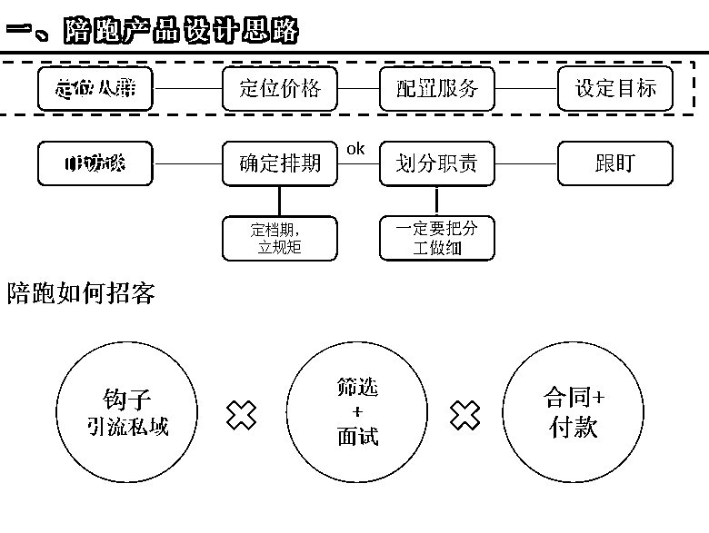
比方说我是让大家 21 天能够变现，或者我是我能让大家私域能够翻倍卖课。比方我让你 10 天、 15 天能做出一套课都可以，这是目标啊。然后就开始排期访谈、 IP 访谈，然后确定整个档期，然后划分整个职责，谁干谁的，然后你一定要划分职责 否则的话最后就会出现责权不分的问题。
通过短视频下钩子不停的把人钩进来，然后你做个小红书卖课宝典，所以小红书所有想卖课的都会来找我领这个嘛， 然后我就会判别他们的赛道，看他们是不是有购买力
然后所以钩子能把人先引到私域，基本上所有的高客单都成交在私域，
筛选加面试很重要，就是高客单来找你是求你买，求你卖给他，而不是你，你求他买你的产品，所以你要给他筛选加面试，
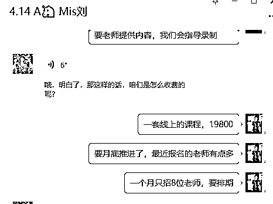
就是你下一个总会行的。这个可能暂时不行，他慢慢有一天他可能也行了。所以你不要急，有的时候很多时候高客单等待一下，他慢慢那个人成长起来，他会回来买的。
最后就是一定要签合同，防患于未然， 因为本来高客单的时候就会有很多焦虑和纠结的情绪
1.要有好的外宣工具
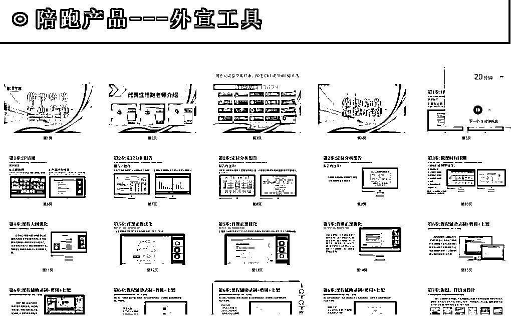
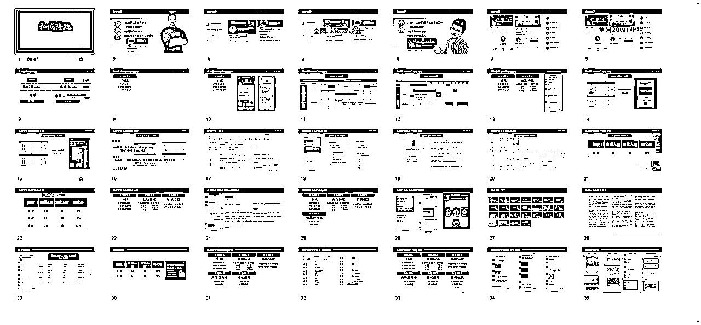
2.配套适当的学员案例
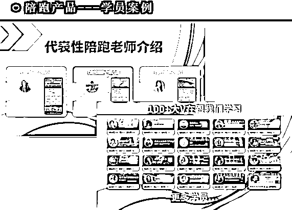
3.每一个高意向重度沟通
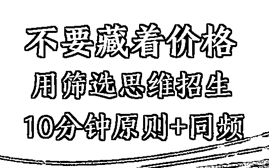
你不要藏着价格，价格是帮你筛选、帮你节省时间的工具。
一般高客单来的第一刹那我跟他说一下，就是你先看一下这个文件，如果你觉得可以的话，我到时候可以今天留出点时间，我约你几点的时间？比方说我不会当下给他打电话，我们还会约一个时间，因为我让他敬畏这个时间 ，你不要让他觉得你好触碰， 就如果他那个时间他不找我，或者他迟到了，我就不等了。 我最开始就是这么干的 ，其实是一种心力，人讲究体力和心力，这是心力。
（财富/意愿/认知）
我们在这个过程中，其实你打通了电话之后，你要先问一下情况，您现在怎么样摸一下基本盘？你觉得如果你第一感觉很正确，就是他，如果你觉得他就基本上不能买或者做不了，你也不用浪费时间了，你就直接挂了就完事了，就找个借头挂了就完事了
接下来我们开始塑造稀缺 一个月应该就只收 8 个老师，我每天业务太忙了， 所以我要保证招这 8 个尽心尽责的负责， 现在目前已经招了第四个了，然后您要进就是第五个，这个月可能我招到 8 个就不进了。
你想再进就下个月塑造稀缺， 第一个点营造尊敬，第二个点塑造稀缺，第三个点 一定要以一段成熟的卖课话术
参考话术👇
比方说卖课的配套，第一步我有一套全抖音独家的定位系统，我能够抓到全抖音卖课的数据，能够帮你出一份精准的报告，而且这个报告里面能把你同行都列出来，你这个行业的定价列出来，赛道定下来，销量定下来，这是第一步
第二步我帮你磨个课程大纲，我帮你磨出来一个更让人看。就想买个大纲，然后帮你确定好这个整个的卖课的方向，然后第三步我的我们来帮您去磨试听课，我会给你一个固定的卖课模板，你按照这个去写试听课，你的卖课率提高 30%- 40%。然后第四步，你正课写的慢不要紧，每天有老师催你，而且给你个框架，你往里填空，其实没有那么复杂，你需要一个氛围去干。
然后第五步，我们去写PPT，然后帮您去调录课。然后您逮住一天就赶紧撸出来，撸完之后我们帮您剪出来加字幕，把那些废话都剪掉，加气口，剪气口、加特效，完事然后我们就可以开始上架了。
您想上哪个平台？我们帮您上一个平台，然后包装详情页第五步，然后最后你就可以开始卖了，这是我们做课的配套。
你看这段话术下去之后，其实就很有立体感，里面有痛点、有目标、有文字，所以我建议如果你不会讲的话，你就把这段回放，到时候你仔细再听两遍，你把你按照我的话术磨出你自己的话术，把步骤列出来。
高客单一定要有一个很好的开营，我跟你讲，就这个东西能够保你这个后面的交付顺利，你不要开营草草缭绕，很多老师 就是不会形式，仪式感不强，就是很快的就过了。
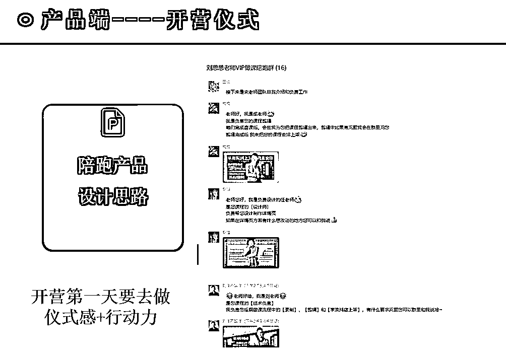
每个人介绍我就感觉我被尊重了，就跟我去飞机上做头等舱一样，就我被尊重了。
所以我觉得不亏，这波不亏，我心里面感觉我被重视了， 仪式感很重要
同时初见要做好仪式感，初次碰会议之后，都会出具专属定位报告
往往好的课程定位不是拍脑袋想出来的，是用数据分析出来的。
每次我都会利用独家软件对学浪内部课程数据进行数据分析，课程定位、定价、内容、售价、销量，全部一次搞定
如果你有这个行业定位的模糊，我可以帮你看一下。我有全网的数据
看定价----要看行业的平均定价，根据我们的数据，一般引流课不会超过599，不然公域很难卖
看对标----参考对标的痛点、卖点、标题、甚至是详情页的文案。他们能卖出去，证明已经在这个赛道成功了
看课数----一般是超过20节的课都不好卖，同时完课率也会低，你想想上学45分钟都很难认真听讲，几十节的课会有人听完吗
看销量----有了销量才能确定是不是蓝海赛道，而不是一个伪蓝海赛道，压根不会有人买

同时梳理后续的工作安排--做课、卖课的时间轴
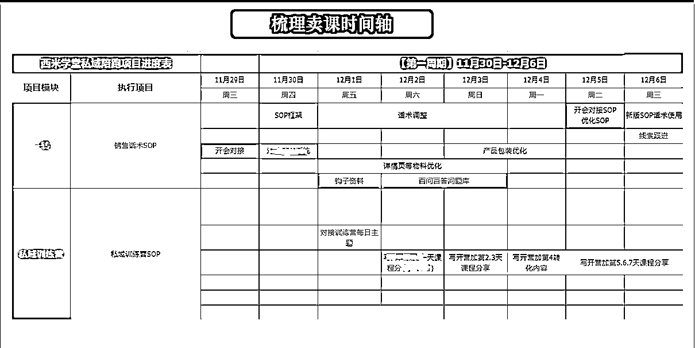
拆步骤，把每一步都拆细，让他看到，先看到再相信就可以了。 把所有的服务过程可视化，然后结果可视化
交付引发好评，所以我们包括每好多老师给的好评，我们包括在线下的时候给很多老师颁发奖状、颁发花
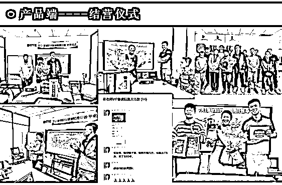
我们在帮助私域的陪跑老师，完成交付之后，都会有结营仪式，同时也会请老师做一个用户证言
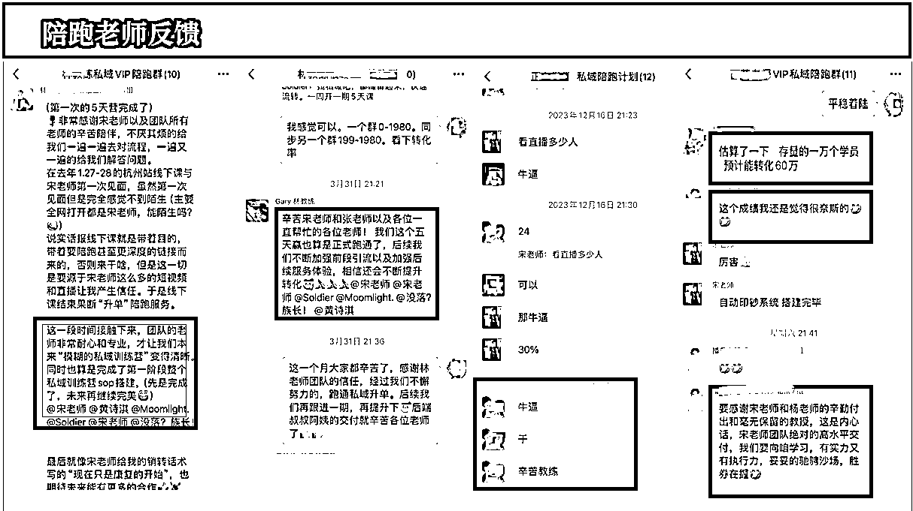
想做高客单就离不开，公域稳定输出，和私域的精细化运营，外加钩子的精准引流
可以回顾下之前的3篇精华帖：
好了，今天的分享就到这，无论你是企业老板还是个人博主，其实我觉得知识付费都是一门极低成本，极高收入的好事，这个行业的利润在75%以上，老板可以做课程，输出你的产品或者管理思维，用课来征服合作伙伴
个人博主可以用高客单稳定收入，提高粉丝粘性和后端合作
欢迎大家有知识付费问题找我讨论
卖课的体系，离不开高客单的支撑。三年的知识付费经历，2次高客单的业绩救于水火之中。同样，24年的知识付费，每一个IP都应有属于自己的高客单变现体系
选择＞努力，高客单是决定你翻身最好的机会
希望大家，2024卖课生财，感谢看到这的每一位老师
我是宋老师，23年帮助500位老师卖课50w，欢迎和我一起卖课生财！